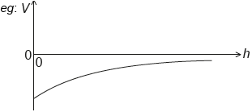

| Date | May 2018 | Marks available | 1 | Reference code | 18M.2.HL.TZ2.6 |
| Level | Higher level | Paper | Paper 2 | Time zone | 2 |
| Command term | State | Question number | 6 | Adapted from | N/A |
Question
A planet has radius R. At a distance h above the surface of the planet the gravitational field strength is g and the gravitational potential is V.
State what is meant by gravitational field strength.
Show that V = –g(R + h).
Draw a graph, on the axes, to show the variation of the gravitational potential V of the planet with height h above the surface of the planet.
![]()
A planet has a radius of 3.1 × 106 m. At a point P a distance 2.4 × 107 m above the surface of the planet the gravitational field strength is 2.2 N kg–1. Calculate the gravitational potential at point P, include an appropriate unit for your answer.
The diagram shows the path of an asteroid as it moves past the planet.

When the asteroid was far away from the planet it had negligible speed. Estimate the speed of the asteroid at point P as defined in (b).
The mass of the asteroid is 6.2 × 1012 kg. Calculate the gravitational force experienced by the planet when the asteroid is at point P.
Markscheme
the «gravitational» force per unit mass exerted on a point/small/test mass
[1 mark]
at height h potential is V = –
field is g =
«dividing gives answer»
Do not allow an answer that starts with g = – and then cancels the deltas and substitutes R + h
[2 marks]
correct shape and sign
non-zero negative vertical intercept

[2 marks]
V = «–2.2 × (3.1 × 106 + 2.4 × 107) =» «–» 6.0 × 107 J kg–1
Unit is essential
Allow eg MJ kg–1 if power of 10 is correct
Allow other correct SI units eg m2s–2, N m kg–1
[1 mark]
total energy at P = 0 / KE gained = GPE lost
«mv2 + mV = 0 ⇒» v =
v = « =» 1.1 × 104 «ms–1»
Award [3] for a bald correct answer
Ignore negative sign errors in the workings
Allow ECF from 6(b)
[3 marks]
ALTERNATIVE 1
force on asteroid is «6.2 × 1012 × 2.2 =» 1.4 × 1013 «N»
«by Newton’s third law» this is also the force on the planet
ALTERNATIVE 2
mass of planet = 2.4 x 1025 «kg» «from V = –»
force on planet «» = 1.4 × 1013 «N»
MP2 must be explicit
[2 marks]
Examiners report
Syllabus sections
- 18M.1.SL.TZ1.23: Newton’s law of gravitation A. is equivalent to Newton’s second law of motion. B. ...
- 22M.1.SL.TZ2.24: Three statements about Newton’s law of gravitation are: I. It can be used to predict the...
- 22M.1.HL.TZ2.21: An astronaut is orbiting Earth in a spaceship. Why does the astronaut experience...
- 19M.2.SL.TZ1.6c.i: Outline why a force acts on the Moon.
- 17M.1.SL.TZ1.15: Two pulses are travelling towards each other. What is a possible pulse shape when the...
-
18N.1.SL.TZ0.23:
Two isolated point particles of mass 4M and 9M are separated by a distance 1 m. A point particle of mass M is placed a distance from the particle of mass 9M. The net gravitational force on M is zero.
![]()
What is ?
A. m
B. m
C. m
D. m
- 18N.2.SL.TZ0.1d.i: Outline what is meant by the gravitational field strength at a point.
- 18N.2.HL.TZ0.8a.i: Outline what is meant by gravitational field strength at a point.
- 18N.2.HL.TZ0.8a.ii: Newton’s law of gravitation applies to point masses. Suggest why the law can be applied to a...
- 18N.2.SL.TZ0.1d.ii: Newton’s law of gravitation applies to point masses. Suggest why the law can be applied to a...
- 19N.1.SL.TZ0.23: A satellite travels around the Earth in a circular orbit. What is true about the forces...
- 19M.1.SL.TZ2.23: Which graph shows the relationship between gravitational force F between two point masses and...
-
18N.2.HL.TZ0.8b.ii:
The time taken for Mars to revolve on its axis is 8.9 × 104 s. Calculate, in m s–1, the orbital speed of the satellite.
-
16N.1.SL.TZ0.23:
On Mars, the gravitational field strength is about of that on Earth. The mass of Earth is approximately ten times that of Mars.
What is ?
A. 0.4
B. 0.6
C. 1.6
D. 2.5
-
18N.2.HL.TZ0.8b.i:
Mars has a mass of 6.4 × 1023 kg. Show that, for Mars, k is about 9 × 10–13 s2 m–3.
-
17M.1.HL.TZ2.19:
The centre of the Earth is separated from the centre of the Moon by a distance D. Point P lies on a line joining the centre of the Earth and the centre of the Moon, a distance X from the centre of the Earth. The gravitational field strength at P is zero.
![]()
What is the ratio ?
A.
B.
C.
D.
- 19M.2.HL.TZ1.5a.i: Outline the origin of the force that acts on Phobos.
-
16N.2.SL.TZ0.6a:
(i) Define gravitational field strength.
(ii) State the SI unit for gravitational field strength.
-
17M.2.HL.TZ2.8c:
Outline, in terms of the force acting on it, why the Earth remains in a circular orbit around the Sun.
- 20N.1.HL.TZ0.30: Two satellites W and X have the same mass. They have circular orbits around the same planet....
- 21M.2.HL.TZ1.2a: Explain why a centripetal force is needed for the planet to be in a circular orbit.
-
20N.1.SL.TZ0.23:
Planet X has a gravitational field strength of at its surface. Planet Y has the same density as X but three times the radius of X. What is the gravitational field strength at the surface of Y?
A.
B.
C.
D.
-
21M.2.HL.TZ2.10a:
Calculate, for the surface of , the gravitational field strength gIo due to the mass of . State an appropriate unit for your answer.
-
21M.1.SL.TZ1.23:
Which is the definition of gravitational field strength at a point?
A. The sum of the gravitational fields created by all masses around the point
B. The gravitational force per unit mass experienced by a small point mass at that point
C. , where is the mass of a planet and is the distance from the planet to the point
D. The resultant force of gravitational attraction on a mass at that point
- 21M.2.SL.TZ1.2a.i: Explain why a centripetal force is needed for the planet to be in a circular orbit.
-
21M.2.SL.TZ1.2b:
Determine the gravitational field of the planet.
The following data are given:
Mass of planet kg
Radius of the planet m. -
17M.1.SL.TZ2.23:
The gravitational field strength at the surface of Earth is g. Another planet has double the radius of Earth and the same density as Earth. What is the gravitational field strength at the surface of this planet?
A.
B.
C. 2g
D. 4g
-
17N.2.SL.TZ0.5a:
Determine the orbital period for the satellite.
Mass of Earth = 6.0 x 1024 kg
-
18M.2.HL.TZ2.6d:
The mass of the asteroid is 6.2 × 1012 kg. Calculate the gravitational force experienced by the planet when the asteroid is at point P.
-
19M.1.SL.TZ1.25:
Satellite X orbits a planet with orbital radius R. Satellite Y orbits the same planet with orbital radius 2R. Satellites X and Y have the same mass.
What is the ratio ?
A.
B.
C. 2
D. 4
-
21N.1.SL.TZ0.23:
The gravitational field strength at the surface of a planet of radius R is . A satellite is moving in a circular orbit a distance R above the surface of the planet. What is the magnitude of the acceleration of the satellite?
A.B.
C.
D.
-
21N.2.SL.TZ0.6b.i:
The orbital radius of Titan around Saturn is and the period of revolution is .
Show that where is the mass of Saturn.
-
21N.2.SL.TZ0.6b.ii:
The orbital radius of Titan around Saturn is 1.2 × 109 m and the orbital period is 15.9 days. Estimate the mass of Saturn.
-
21N.2.HL.TZ0.6c.i:
The orbital radius of Titan around Saturn is and the period of revolution is .
Show that where is the mass of Saturn.
-
21N.2.HL.TZ0.6c.ii:
The orbital radius of Titan around Saturn is 1.2 × 109 m and the orbital period is 15.9 days. Estimate the mass of Saturn.
-
22M.1.HL.TZ1.24:
P and Q are two moons of equal densities orbiting a planet. The orbital radius of P is twice the orbital radius of Q. The volume of P is half that of Q. The force exerted by the planet on P is F. What is the force exerted by the planet on Q?
A. F
B. 2F
C. 4F
D. 8F